Pony 対応 おすすめLoRA一覧
対応モデルごとに分類されたLoRA一覧です。各カテゴリーを選択してください。全 971 ファイル。
Pony (100 items on this page / Total 123 items)
.jpg)
Pony
キャラ
1dkXLP (2)
「1dkXLP (2)」を精密に再現する追加学習モデルです。Stable DiffusionのAI画像生成において、特徴的な容姿や表情をLoRAで安定させて描画。ハイクオリティな特定キャラ画像を生成したい方に最適です。
Size: 228,453,380

Pony
キャラ
1dkXLP
「1dkXLP」を精密に再現する追加学習モデルです。Stable DiffusionのAI画像生成において、特徴的な容姿や表情をLoRAで安定させて描画。ハイクオリティな特定キャラ画像を生成したい方に最適です。
Size: 228,453,380
Pony
キャラ
2b-s1-ponyxl-lora-nochekaiser
「2b s1 ponyxl lora nochekaiser」を精密に再現する追加学習モデルです。Stable DiffusionのAI画像生成において、特徴的な容姿や表情をLoRAで安定させて描画。ハイクオリティな特定キャラ画像を生成したい方に最適です。
Size: 228,465,836
Pony
キャラ
7eleven_storefront_PONY_V1
「7eleven storefront PONY V1」を精密に再現する追加学習モデルです。Stable DiffusionのAI画像生成において、特徴的な容姿や表情をLoRAで安定させて描画。ハイクオリティな特定キャラ画像を生成したい方に最適です。
Size: 114,432,244
Pony
その他
Akatsuki_from_Kantai_Collection_PD
「Akatsuki from Kantai Collection PD」に特化した追加学習モデルです。Stable DiffusionでのAI画像生成にLoRAを導入し、特定要素の再現性を劇的に向上。効率的かつ高品質なビジュアルを求める全てのAI絵師必見のモデルです。
Size: 228,513,340
Pony
キャラ
akira_japan
「akira japan」を精密に再現する追加学習モデルです。Stable DiffusionのAI画像生成において、特徴的な容姿や表情をLoRAで安定させて描画。ハイクオリティな特定キャラ画像を生成したい方に最適です。
Size: 228,455,100
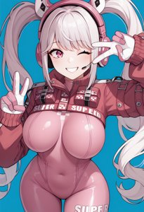
Pony
キャラ
alice-nikke-richy-v2_pdxl
「alice nikke richy v2 pdxl」を精密に再現する追加学習モデルです。Stable DiffusionのAI画像生成において、特徴的な容姿や表情をLoRAで安定させて描画。ハイクオリティな特定キャラ画像を生成したい方に最適です。
Size: 57,468,108
Pony
キャラ
AlleyInRA-v1
「AlleyInRA v1」を精密に再現する追加学習モデルです。Stable DiffusionのAI画像生成において、特徴的な容姿や表情をLoRAで安定させて描画。ハイクオリティな特定キャラ画像を生成したい方に最適です。
Size: 151,111,376
Pony
キャラ
Anime_Figure_P1
「Anime Figure P1」を精密に再現する追加学習モデルです。Stable DiffusionのAI画像生成において、特徴的な容姿や表情をLoRAで安定させて描画。ハイクオリティな特定キャラ画像を生成したい方に最適です。
Size: 228,524,292
Pony
キャラ
ass_support_object_v0.1-pony
「ass support object v0.1 pony」を精密に再現する追加学習モデルです。Stable DiffusionのAI画像生成において、特徴的な容姿や表情をLoRAで安定させて描画。ハイクオリティな特定キャラ画像を生成したい方に最適です。
Size: 57,443,628

Pony
画風
ATRex_style-10
「ATRex style 10」の独特なタッチを反映する追加学習モデル。Stable DiffusionでのAI画像生成で、色彩や質感をLoRAにより一変させます。独創的で芸術性の高い作品を追求するクリエイターにおすすめです。
Size: 57,432,180
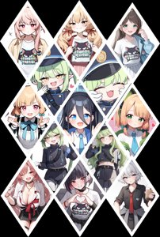
Pony
キャラ
blue_archive_all_v3
「blue archive all v3」を精密に再現する追加学習モデルです。Stable DiffusionのAI画像生成において、特徴的な容姿や表情をLoRAで安定させて描画。ハイクオリティな特定キャラ画像を生成したい方に最適です。
Size: 230,924,356
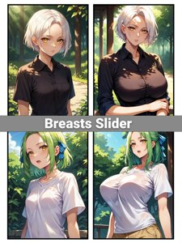
Pony
その他
breasts_size_slider_pdxl_goofy
「breasts size slider pdxl goofy」に特化した追加学習モデルです。Stable DiffusionでのAI画像生成にLoRAを導入し、特定要素の再現性を劇的に向上。効率的かつ高品質なビジュアルを求める全てのAI絵師必見のモデルです。
Size: 8,789,076
Pony
キャラ
buruma-ai-up-z
「buruma ai up z」を精密に再現する追加学習モデルです。Stable DiffusionのAI画像生成において、特徴的な容姿や表情をLoRAで安定させて描画。ハイクオリティな特定キャラ画像を生成したい方に最適です。
Size: 170,128,272
Pony
キャラ
c0l0urc0r3XLP2
「c0l0urc0r3XLP2」を精密に再現する追加学習モデルです。Stable DiffusionのAI画像生成において、特徴的な容姿や表情をLoRAで安定させて描画。ハイクオリティな特定キャラ画像を生成したい方に最適です。
Size: 228,453,876
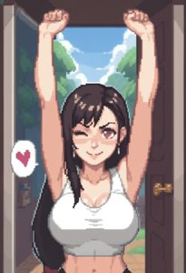
Pony
キャラ
c0ne
「c0ne」を精密に再現する追加学習モデルです。Stable DiffusionのAI画像生成において、特徴的な容姿や表情をLoRAで安定させて描画。ハイクオリティな特定キャラ画像を生成したい方に最適です。
Size: 57,431,060
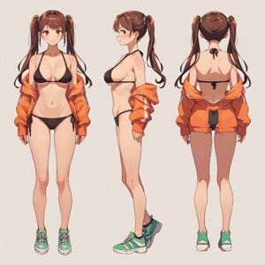
Pony
キャラ
character_sheet
「character sheet」を精密に再現する追加学習モデルです。Stable DiffusionのAI画像生成において、特徴的な容姿や表情をLoRAで安定させて描画。ハイクオリティな特定キャラ画像を生成したい方に最適です。
Size: 456,491,700
Pony
キャラ
ChunSF
「ChunSF」を精密に再現する追加学習モデルです。Stable DiffusionのAI画像生成において、特徴的な容姿や表情をLoRAで安定させて描画。ハイクオリティな特定キャラ画像を生成したい方に最適です。
Size: 228,456,204
Pony
キャラ
CMN(Pony)0.1v
「CMN(Pony)0.1v」を精密に再現する追加学習モデルです。Stable DiffusionのAI画像生成において、特徴的な容姿や表情をLoRAで安定させて描画。ハイクオリティな特定キャラ画像を生成したい方に最適です。
Size: 228,450,084
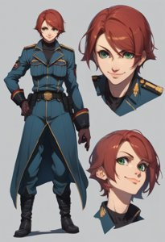
Pony
画風
concept-10
「concept 10」の独特なタッチを反映する追加学習モデル。Stable DiffusionでのAI画像生成で、色彩や質感をLoRAにより一変させます。独創的で芸術性の高い作品を追求するクリエイターにおすすめです。
Size: 57,424,236
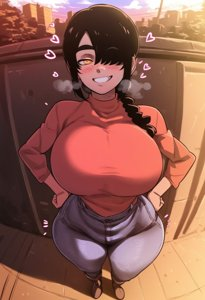
Pony
画風
D-ART_XL-V2
「D ART XL V2」の独特なタッチを反映する追加学習モデル。Stable DiffusionでのAI画像生成で、色彩や質感をLoRAにより一変させます。独創的で芸術性の高い作品を追求するクリエイターにおすすめです。
Size: 353,985,624

Pony
キャラ
d3t41l3dXLP
「d3t41l3dXLP」を精密に再現する追加学習モデルです。Stable DiffusionのAI画像生成において、特徴的な容姿や表情をLoRAで安定させて描画。ハイクオリティな特定キャラ画像を生成したい方に最適です。
Size: 228,455,716
Pony
キャラ
DarkerThanDarkV1
「DarkerThanDarkV1」を精密に再現する追加学習モデルです。Stable DiffusionのAI画像生成において、特徴的な容姿や表情をLoRAで安定させて描画。ハイクオリティな特定キャラ画像を生成したい方に最適です。
Size: 228,472,492

Pony
画風
Detailed anime style - SDXL_pony
「Detailed anime style SDXL pony」の独特なタッチを反映する追加学習モデル。Stable DiffusionでのAI画像生成で、色彩や質感をLoRAにより一変させます。独創的で芸術性の高い作品を追求するクリエイターにおすすめです。
Size: 456,484,044

Pony
画風
Digital Art Style SDXL_LoRA_Pony Diffusion V6 XL
「Digital Art Style SDXL LoRA Pony Diffusion V6 XL」の独特なタッチを反映する追加学習モデル。Stable DiffusionでのAI画像生成で、色彩や質感をLoRAにより一変させます。独創的で芸術性の高い作品を追求するクリエイターにおすすめです。
Size: 228,456,380
Pony
ポーズ
DynamicPose_alpha1.0_rank4_noxattn_100steps
「DynamicPose alpha1.0 rank4 noxattn 100steps」のポーズを制御する追加学習モデル。Stable DiffusionでのAI画像生成において、LoRAが構図の再現性を劇的に向上。躍動感のあるポーズや特定の構図を狙って描きたい方に強くおすすめします。
Size: 8,789,076
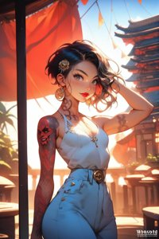
Pony
キャラ
EnvyPonyPrettyEyes01
「EnvyPonyPrettyEyes01」を精密に再現する追加学習モデルです。Stable DiffusionのAI画像生成において、特徴的な容姿や表情をLoRAで安定させて描画。ハイクオリティな特定キャラ画像を生成したい方に最適です。
Size: 362,050,864
Pony
衣装
explodingclothes_pony
「explodingclothes pony」の衣装を付与できる追加学習モデルです。Stable DiffusionのAI画像生成でLoRAを活用し、細部までこだわり抜いたデザインを固定可能。特定のコスチュームを手軽に再現したい時に重宝します。
Size: 57,435,052

Pony
キャラ
Eyes_Lora_Pony_Perfect_eyes
「Eyes Lora Pony Perfect eyes」を精密に再現する追加学習モデルです。Stable DiffusionのAI画像生成において、特徴的な容姿や表情をLoRAで安定させて描画。ハイクオリティな特定キャラ画像を生成したい方に最適です。
Size: 228,455,668
.jpg)
Pony
キャラ
f3mp0vXLP (1)
「f3mp0vXLP (1)」を精密に再現する追加学習モデルです。Stable DiffusionのAI画像生成において、特徴的な容姿や表情をLoRAで安定させて描画。ハイクオリティな特定キャラ画像を生成したい方に最適です。
Size: 228,472,612
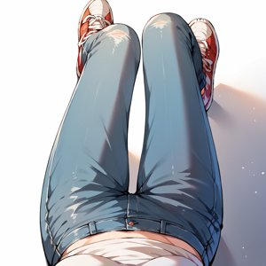
Pony
キャラ
f3mp0vXLP
「f3mp0vXLP」を精密に再現する追加学習モデルです。Stable DiffusionのAI画像生成において、特徴的な容姿や表情をLoRAで安定させて描画。ハイクオリティな特定キャラ画像を生成したい方に最適です。
Size: 228,472,612
Pony
キャラ
famima_storefront_PONY_V1
「famima storefront PONY V1」を精密に再現する追加学習モデルです。Stable DiffusionのAI画像生成において、特徴的な容姿や表情をLoRAで安定させて描画。ハイクオリティな特定キャラ画像を生成したい方に最適です。
Size: 114,432,180
Pony
キャラ
feifei_20250205125355
「feifei 20250205125355」を精密に再現する追加学習モデルです。Stable DiffusionのAI画像生成において、特徴的な容姿や表情をLoRAで安定させて描画。ハイクオリティな特定キャラ画像を生成したい方に最適です。
Size: 75,613,054

Pony
キャラ
g0th1cPXL
「g0th1cPXL」を精密に再現する追加学習モデルです。Stable DiffusionのAI画像生成において、特徴的な容姿や表情をLoRAで安定させて描画。ハイクオリティな特定キャラ画像を生成したい方に最適です。
Size: 228,453,668

Pony
キャラ
g4n1m3XLP
「g4n1m3XLP」を精密に再現する追加学習モデルです。Stable DiffusionのAI画像生成において、特徴的な容姿や表情をLoRAで安定させて描画。ハイクオリティな特定キャラ画像を生成したい方に最適です。
Size: 228,455,036
Pony
キャラ
gamecenter_pony_V1
「gamecenter pony V1」を精密に再現する追加学習モデルです。Stable DiffusionのAI画像生成において、特徴的な容姿や表情をLoRAで安定させて描画。ハイクオリティな特定キャラ画像を生成したい方に最適です。
Size: 405,032,660
Pony
キャラ
genshin_v4
「genshin v4」を精密に再現する追加学習モデルです。Stable DiffusionのAI画像生成において、特徴的な容姿や表情をLoRAで安定させて描画。ハイクオリティな特定キャラ画像を生成したい方に最適です。
Size: 230,580,028
Pony
キャラ
Goth_girl_XL-v2
「Goth girl XL v2」を精密に再現する追加学習モデルです。Stable DiffusionのAI画像生成において、特徴的な容姿や表情をLoRAで安定させて描画。ハイクオリティな特定キャラ画像を生成したい方に最適です。
Size: 228,466,772
Pony
キャラ
Granblue_Fantasy_PSXL
「Granblue Fantasy PSXL」を精密に再現する追加学習モデルです。Stable DiffusionのAI画像生成において、特徴的な容姿や表情をLoRAで安定させて描画。ハイクオリティな特定キャラ画像を生成したい方に最適です。
Size: 228,455,428
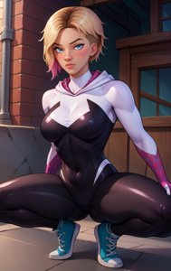
Pony
キャラ
GwenstacySDXL-10
「GwenstacySDXL 10」を精密に再現する追加学習モデルです。Stable DiffusionのAI画像生成において、特徴的な容姿や表情をLoRAで安定させて描画。ハイクオリティな特定キャラ画像を生成したい方に最適です。
Size: 57,431,724
Pony
キャラ
hanabusa_lisa-pony-08
「hanabusa lisa pony 08」を精密に再現する追加学習モデルです。Stable DiffusionのAI画像生成において、特徴的な容姿や表情をLoRAで安定させて描画。ハイクオリティな特定キャラ画像を生成したい方に最適です。
Size: 50,971,812
Pony
その他
hassakuXLPony_v13BetterEyesVersion
「hassakuXLPony v13BetterEyesVersion」に特化した追加学習モデルです。Stable DiffusionでのAI画像生成にLoRAを導入し、特定要素の再現性を劇的に向上。効率的かつ高品質なビジュアルを求める全てのAI絵師必見のモデルです。
Size: 6,938,042,770
Pony
キャラ
helix
「helix」を精密に再現する追加学習モデルです。Stable DiffusionのAI画像生成において、特徴的な容姿や表情をLoRAで安定させて描画。ハイクオリティな特定キャラ画像を生成したい方に最適です。
Size: 228,466,324
Pony
キャラ
hinaPonyRealistic_v5-mbp-rev1
「hinaPonyRealistic v5 mbp rev1」を精密に再現する追加学習モデルです。Stable DiffusionのAI画像生成において、特徴的な容姿や表情をLoRAで安定させて描画。ハイクオリティな特定キャラ画像を生成したい方に最適です。
Size: 121,823,376
Pony
キャラ
hosekiLustrousmixPony_v20
「hosekiLustrousmixPony v20」を精密に再現する追加学習モデルです。Stable DiffusionのAI画像生成において、特徴的な容姿や表情をLoRAで安定させて描画。ハイクオリティな特定キャラ画像を生成したい方に最適です。
Size: 7,105,350,162
Pony
キャラ
hypnotized_face_pony
「hypnotized face pony」を精密に再現する追加学習モデルです。Stable DiffusionのAI画像生成において、特徴的な容姿や表情をLoRAで安定させて描画。ハイクオリティな特定キャラ画像を生成したい方に最適です。
Size: 185,706,096
Pony
その他
Ikazuchi_from_Kantai_Collection_PD
「Ikazuchi from Kantai Collection PD」に特化した追加学習モデルです。Stable DiffusionでのAI画像生成にLoRAを導入し、特定要素の再現性を劇的に向上。効率的かつ高品質なビジュアルを求める全てのAI絵師必見のモデルです。
Size: 228,508,876
Pony
その他
Inazuma_from_Kantai_Collection_PD
「Inazuma from Kantai Collection PD」に特化した追加学習モデルです。Stable DiffusionでのAI画像生成にLoRAを導入し、特定要素の再現性を劇的に向上。効率的かつ高品質なビジュアルを求める全てのAI絵師必見のモデルです。
Size: 228,524,972
Pony
衣装
Inazuma_Japan_Uniform_Orion
「Inazuma Japan Uniform Orion」の衣装を付与できる追加学習モデルです。Stable DiffusionのAI画像生成でLoRAを活用し、細部までこだわり抜いたデザインを固定可能。特定のコスチュームを手軽に再現したい時に重宝します。
Size: 228,454,644
Pony
キャラ
IshikePony
「IshikePony」を精密に再現する追加学習モデルです。Stable DiffusionのAI画像生成において、特徴的な容姿や表情をLoRAで安定させて描画。ハイクオリティな特定キャラ画像を生成したい方に最適です。
Size: 228,461,148
Pony
キャラ
Japan-ish
「Japan ish」を精密に再現する追加学習モデルです。Stable DiffusionのAI画像生成において、特徴的な容姿や表情をLoRAで安定させて描画。ハイクオリティな特定キャラ画像を生成したい方に最適です。
Size: 228,486,396
Pony
キャラ
japan
「japan」を精密に再現する追加学習モデルです。Stable DiffusionのAI画像生成において、特徴的な容姿や表情をLoRAで安定させて描画。ハイクオリティな特定キャラ画像を生成したい方に最適です。
Size: 37,876,816
Pony
キャラ
Japan_Design_White_Blouses
「Japan Design White Blouses」を精密に再現する追加学習モデルです。Stable DiffusionのAI画像生成において、特徴的な容姿や表情をLoRAで安定させて描画。ハイクオリティな特定キャラ画像を生成したい方に最適です。
Size: 228,453,996
Pony
画風
Japan_realistic_style-000013
「Japan realistic style 000013」の独特なタッチを反映する追加学習モデル。Stable DiffusionでのAI画像生成で、色彩や質感をLoRAにより一変させます。独創的で芸術性の高い作品を追求するクリエイターにおすすめです。
Size: 456,506,028
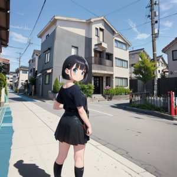
Pony
背景
JAPAN_SCENERY_ROAD_SD15_V1
「JAPAN SCENERY ROAD SD15 V1」のロケーションを生成する追加学習モデル。Stable DiffusionのAI画像生成において、LoRAが背景の密度と臨場感を劇的に向上させます。作品の没入感を高めたい背景重視の制作に最適です。
Size: 61,650,490
Pony
キャラ
jpcosermix-000008
「jpcosermix 000008」を精密に再現する追加学習モデルです。Stable DiffusionのAI画像生成において、特徴的な容姿や表情をLoRAで安定させて描画。ハイクオリティな特定キャラ画像を生成したい方に最適です。
Size: 151,110,935
Pony
キャラ
JPfilmColor_Heavy_grain
「JPfilmColor Heavy grain」を精密に再現する追加学習モデルです。Stable DiffusionのAI画像生成において、特徴的な容姿や表情をLoRAで安定させて描画。ハイクオリティな特定キャラ画像を生成したい方に最適です。
Size: 37,871,065
Pony
キャラ
JP_Countryside-v1
「JP Countryside v1」を精密に再現する追加学習モデルです。Stable DiffusionのAI画像生成において、特徴的な容姿や表情をLoRAで安定させて描画。ハイクオリティな特定キャラ画像を生成したい方に最適です。
Size: 151,111,440
Pony
キャラ
Kaori_Saeki_Pony
「Kaori Saeki Pony」を精密に再現する追加学習モデルです。Stable DiffusionのAI画像生成において、特徴的な容姿や表情をLoRAで安定させて描画。ハイクオリティな特定キャラ画像を生成したい方に最適です。
Size: 50,931,780
Pony
その他
konosuba-aqua-s2-ponyxl-lora-nochekaiser
「konosuba aqua s2 ponyxl lora nochekaiser」に特化した追加学習モデルです。Stable DiffusionでのAI画像生成にLoRAを導入し、特定要素の再現性を劇的に向上。効率的かつ高品質なビジュアルを求める全てのAI絵師必見のモデルです。
Size: 228,471,180
Pony
キャラ
KraiAnimePony
「KraiAnimePony」を精密に再現する追加学習モデルです。Stable DiffusionのAI画像生成において、特徴的な容姿や表情をLoRAで安定させて描画。ハイクオリティな特定キャラ画像を生成したい方に最適です。
Size: 228,450,268
Pony
キャラ
leggings_v2.6-pony
「leggings v2.6 pony」を精密に再現する追加学習モデルです。Stable DiffusionのAI画像生成において、特徴的な容姿や表情をLoRAで安定させて描画。ハイクオリティな特定キャラ画像を生成したい方に最適です。
Size: 57,425,444
Pony
キャラ
lms_v0.1_cwhj
「lms v0.1 cwhj」を精密に再現する追加学習モデルです。Stable DiffusionのAI画像生成において、特徴的な容姿や表情をLoRAで安定させて描画。ハイクオリティな特定キャラ画像を生成したい方に最適です。
Size: 170,565,932
Pony
キャラ
mak1ma0XL_Pony_v1
「mak1ma0XL Pony v1」を精密に再現する追加学習モデルです。Stable DiffusionのAI画像生成において、特徴的な容姿や表情をLoRAで安定させて描画。ハイクオリティな特定キャラ画像を生成したい方に最適です。
Size: 228,456,892
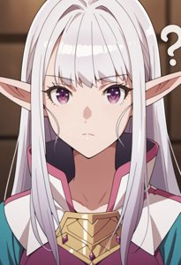
Pony
キャラ
Mariabelle-55
「Mariabelle 55」を精密に再現する追加学習モデルです。Stable DiffusionのAI画像生成において、特徴的な容姿や表情をLoRAで安定させて描画。ハイクオリティな特定キャラ画像を生成したい方に最適です。
Size: 114,436,308
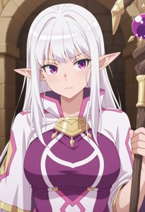
Pony
キャラ
Mariabelle-61
「Mariabelle 61」を精密に再現する追加学習モデルです。Stable DiffusionのAI画像生成において、特徴的な容姿や表情をLoRAで安定させて描画。ハイクオリティな特定キャラ画像を生成したい方に最適です。
Size: 114,440,876
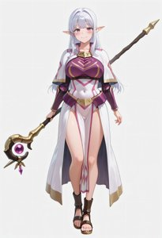
Pony
その他
Mariabelle_Welcome_to_Japan_Ms_Elf_ilxl_goofy
「Mariabelle Welcome to Japan Ms Elf ilxl goofy」に特化した追加学習モデルです。Stable DiffusionでのAI画像生成にLoRAを導入し、特定要素の再現性を劇的に向上。効率的かつ高品質なビジュアルを求める全てのAI絵師必見のモデルです。
Size: 57,417,300
Pony
キャラ
matsuya_pony_V1
「matsuya pony V1」を精密に再現する追加学習モデルです。Stable DiffusionのAI画像生成において、特徴的な容姿や表情をLoRAで安定させて描画。ハイクオリティな特定キャラ画像を生成したい方に最適です。
Size: 202,688,460
Pony
キャラ
MatureFemalePony
「MatureFemalePony」を精密に再現する追加学習モデルです。Stable DiffusionのAI画像生成において、特徴的な容姿や表情をLoRAで安定させて描画。ハイクオリティな特定キャラ画像を生成したい方に最適です。
Size: 93,015,608
Pony
キャラ
McDonald_JP_indoors_SD15_V2
「McDonald JP indoors SD15 V2」を精密に再現する追加学習モデルです。Stable DiffusionのAI画像生成において、特徴的な容姿や表情をLoRAで安定させて描画。ハイクオリティな特定キャラ画像を生成したい方に最適です。
Size: 40,385,378
Pony
キャラ
MeMaXLV3_TypeB_AutismMix
「MeMaXLV3 TypeB AutismMix」を精密に再現する追加学習モデルです。Stable DiffusionのAI画像生成において、特徴的な容姿や表情をLoRAで安定させて描画。ハイクオリティな特定キャラ画像を生成したい方に最適です。
Size: 228,456,028
Pony
衣装
micro_gold_dress_v0.6-pony
「micro gold dress v0.6 pony」の衣装を付与できる追加学習モデルです。Stable DiffusionのAI画像生成でLoRAを活用し、細部までこだわり抜いたデザインを固定可能。特定のコスチュームを手軽に再現したい時に重宝します。
Size: 57,427,484
Pony
キャラ
ministop_storefront_PONY_V1
「ministop storefront PONY V1」を精密に再現する追加学習モデルです。Stable DiffusionのAI画像生成において、特徴的な容姿や表情をLoRAで安定させて描画。ハイクオリティな特定キャラ画像を生成したい方に最適です。
Size: 114,432,212

Pony
キャラ
mistoonAnime_ponyAlpha
「mistoonAnime ponyAlpha」を精密に再現する追加学習モデルです。Stable DiffusionのAI画像生成において、特徴的な容姿や表情をLoRAで安定させて描画。ハイクオリティな特定キャラ画像を生成したい方に最適です。
Size: 1,840,286,983
Pony
キャラ
miyakko_pony_V1
「miyakko pony V1」を精密に再現する追加学習モデルです。Stable DiffusionのAI画像生成において、特徴的な容姿や表情をLoRAで安定させて描画。ハイクオリティな特定キャラ画像を生成したい方に最適です。
Size: 405,032,236
Pony
キャラ
moccosu_pony_V1
「moccosu pony V1」を精密に再現する追加学習モデルです。Stable DiffusionのAI画像生成において、特徴的な容姿や表情をLoRAで安定させて描画。ハイクオリティな特定キャラ画像を生成したい方に最適です。
Size: 405,031,988
Pony
キャラ
modern_anime_screencap_v1_0
「modern anime screencap v1 0」を精密に再現する追加学習モデルです。Stable DiffusionのAI画像生成において、特徴的な容姿や表情をLoRAで安定させて描画。ハイクオリティな特定キャラ画像を生成したい方に最適です。
Size: 228,472,580
Pony
キャラ
Momo_Ayase_Dandadan_V2
「Momo Ayase Dandadan V2」を精密に再現する追加学習モデルです。Stable DiffusionのAI画像生成において、特徴的な容姿や表情をLoRAで安定させて描画。ハイクオリティな特定キャラ画像を生成したい方に最適です。
Size: 57,432,188
Pony
キャラ
Monica_Adenauer
「Monica Adenauer」を精密に再現する追加学習モデルです。Stable DiffusionのAI画像生成において、特徴的な容姿や表情をLoRAで安定させて描画。ハイクオリティな特定キャラ画像を生成したい方に最適です。
Size: 228,457,060
Pony
キャラ
muk_pony_v2
「muk pony v2」を精密に再現する追加学習モデルです。Stable DiffusionのAI画像生成において、特徴的な容姿や表情をLoRAで安定させて描画。ハイクオリティな特定キャラ画像を生成したい方に最適です。
Size: 71,318,768
Pony
キャラ
muromachi86
「muromachi86」を精密に再現する追加学習モデルです。Stable DiffusionのAI画像生成において、特徴的な容姿や表情をLoRAで安定させて描画。ハイクオリティな特定キャラ画像を生成したい方に最適です。
Size: 228,474,540
Pony
キャラ
NetCafe_PONY_V1
「NetCafe PONY V1」を精密に再現する追加学習モデルです。Stable DiffusionのAI画像生成において、特徴的な容姿や表情をLoRAで安定させて描画。ハイクオリティな特定キャラ画像を生成したい方に最適です。
Size: 202,689,396
Pony
画風
noc-AestheticScene_Pony
「noc AestheticScene Pony」の独特なタッチを反映する追加学習モデル。Stable DiffusionでのAI画像生成で、色彩や質感をLoRAにより一変させます。独創的で芸術性の高い作品を追求するクリエイターにおすすめです。
Size: 114,435,924
Pony
画風
nyantcha_style_pdxl_v2_goofy
「nyantcha style pdxl v2 goofy」の独特なタッチを反映する追加学習モデル。Stable DiffusionでのAI画像生成で、色彩や質感をLoRAにより一変させます。独創的で芸術性の高い作品を追求するクリエイターにおすすめです。
Size: 114,428,803
Pony
キャラ
ohogao_PonyXL_v2
「ohogao PonyXL v2」を精密に再現する追加学習モデルです。Stable DiffusionのAI画像生成において、特徴的な容姿や表情をLoRAで安定させて描画。ハイクオリティな特定キャラ画像を生成したい方に最適です。
Size: 114,442,772
Pony
画風
partially_underwater_shot_v0.1-pony-dim8fp16
「partially underwater shot v0.1 pony dim8fp16」の独特なタッチを反映する追加学習モデル。Stable DiffusionでのAI画像生成で、色彩や質感をLoRAにより一変させます。独創的で芸術性の高い作品を追求するクリエイターにおすすめです。
Size: 51,544,004
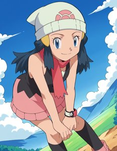
Pony
その他
pokemon-dawn-anime-ponyxl-lora-nochekaiser
「pokemon dawn anime ponyxl lora nochekaiser」に特化した追加学習モデルです。Stable DiffusionでのAI画像生成にLoRAを導入し、特定要素の再現性を劇的に向上。効率的かつ高品質なビジュアルを求める全てのAI絵師必見のモデルです。
Size: 228,466,028
Pony
キャラ
Pony_DetailV2.0
「Pony DetailV2.0」を精密に再現する追加学習モデルです。Stable DiffusionのAI画像生成において、特徴的な容姿や表情をLoRAで安定させて描画。ハイクオリティな特定キャラ画像を生成したい方に最適です。
Size: 11,862,048
Pony
キャラ
pony_good_hands
「pony good hands」を精密に再現する追加学習モデルです。Stable DiffusionのAI画像生成において、特徴的な容姿や表情をLoRAで安定させて描画。ハイクオリティな特定キャラ画像を生成したい方に最適です。
Size: 228,485,068
Pony
キャラ
popura_storefront_PONY_V1
「popura storefront PONY V1」を精密に再現する追加学習モデルです。Stable DiffusionのAI画像生成において、特徴的な容姿や表情をLoRAで安定させて描画。ハイクオリティな特定キャラ画像を生成したい方に最適です。
Size: 114,432,196
Pony
キャラ
princess_carry_v0.3-pony
「princess carry v0.3 pony」を精密に再現する追加学習モデルです。Stable DiffusionのAI画像生成において、特徴的な容姿や表情をLoRAで安定させて描画。ハイクオリティな特定キャラ画像を生成したい方に最適です。
Size: 57,460,908
Pony
キャラ
PurpleKeeper_IL-06
「PurpleKeeper IL 06」を精密に再現する追加学習モデルです。Stable DiffusionのAI画像生成において、特徴的な容姿や表情をLoRAで安定させて描画。ハイクオリティな特定キャラ画像を生成したい方に最適です。
Size: 50,930,612
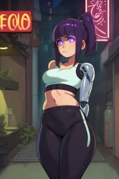
Pony
キャラ
RD-MAnon-XLV1.1-000014
「RD MAnon XLV1.1 000014」を精密に再現する追加学習モデルです。Stable DiffusionのAI画像生成において、特徴的な容姿や表情をLoRAで安定させて描画。ハイクオリティな特定キャラ画像を生成したい方に最適です。
Size: 114,455,324
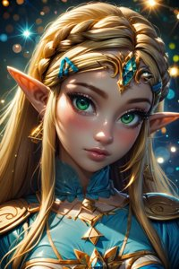
Pony
キャラ
RealisticAnime
「RealisticAnime」を精密に再現する追加学習モデルです。Stable DiffusionのAI画像生成において、特徴的な容姿や表情をLoRAで安定させて描画。ハイクオリティな特定キャラ画像を生成したい方に最適です。
Size: 228,481,924
Pony
衣装
RedTeamUniform_IL-05
「RedTeamUniform IL 05」の衣装を付与できる追加学習モデルです。Stable DiffusionのAI画像生成でLoRAを活用し、細部までこだわり抜いたデザインを固定可能。特定のコスチュームを手軽に再現したい時に重宝します。
Size: 50,931,980
Pony
キャラ
Reika_Kitami_Pony
「Reika Kitami Pony」を精密に再現する追加学習モデルです。Stable DiffusionのAI画像生成において、特徴的な容姿や表情をLoRAで安定させて描画。ハイクオリティな特定キャラ画像を生成したい方に最適です。
Size: 50,929,380
Pony
キャラ
Resistance_Japan_r1
「Resistance Japan r1」を精密に再現する追加学習モデルです。Stable DiffusionのAI画像生成において、特徴的な容姿や表情をLoRAで安定させて描画。ハイクオリティな特定キャラ画像を生成したい方に最適です。
Size: 57,423,812
Pony
キャラ
riMixPONYIllustrious_riMix
「riMixPONYIllustrious riMix」を精密に再現する追加学習モデルです。Stable DiffusionのAI画像生成において、特徴的な容姿や表情をLoRAで安定させて描画。ハイクオリティな特定キャラ画像を生成したい方に最適です。
Size: 6,938,047,380
Pony
画風
seicomart_storefront_PONY_V1
「seicomart storefront PONY V1」の独特なタッチを反映する追加学習モデル。Stable DiffusionでのAI画像生成で、色彩や質感をLoRAにより一変させます。独創的で芸術性の高い作品を追求するクリエイターにおすすめです。
Size: 114,432,316
Pony
キャラ
sfrieren_ponyxl
「sfrieren ponyxl」を精密に再現する追加学習モデルです。Stable DiffusionのAI画像生成において、特徴的な容姿や表情をLoRAで安定させて描画。ハイクオリティな特定キャラ画像を生成したい方に最適です。
Size: 114,438,708